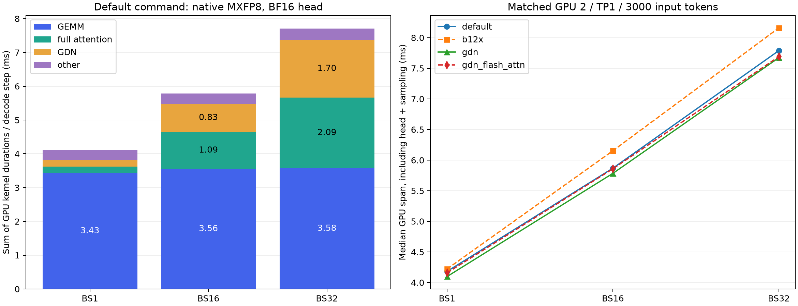

Qwen3.5-4B-MXFP8 · TP1 · BS1 / 16 / 32
2026-09-30，RTX 5090 / SM120，CUDA_VISIBLE_DEVICES=2，3000 input tokens
你的启动命令默认使用 mxfp6 包内的 mxfp8：Mxfp8Sm120LinearKernel → mxfp6.mxfp8 / torch.ops.mxfp8_sm120。建议继续保留 native MXFP8 和 Triton attention。b12x 没有测出收益；TP1 GDN 对 GPU 执行区间仅有约 1–2% 改善，而且 BS16 的生成输出未通过重复一致性检查，不建议直接加入默认启动命令。
本次在同一张 GPU 上顺序完成 4 个配置 × 3 档 batch 的 decode 测量，以及 3 档 prefill 测量。已有 8252 服务保持运行，测量实例使用 8253，结束后均已关闭。8 层 full attention、24 层 GDN；SSM cache 使用默认 FP32，lm_head 使用 BF16。

默认命令：每个 decode step 的 GPU kernel 耗时，单位 ms
以下四类互不重复。GEMM 包括注意力投影、MLP、GDN BA 和 lm_head；full attention / GDN 包含各自核心计算及配套布局、卷积、归一化等，不重复计算投影。其他包括公共 residual/RMSNorm、激活量化、SwiGLU、embedding、sampling 和调度 GPU kernel。四类相加是 kernel duration 的总和，不等同于端到端 TPOT。
| 部分 | BS1 | BS16 | BS32 |
|---|---|---|---|
| GEMM 总计 | 3.429 (83.5%) | 3.556 (61.4%) | 3.575 (46.4%) |
| Full attention | 0.191 (4.7%) | 1.093 (18.9%) | 2.092 (27.1%) |
| GDN | 0.201 (4.9%) | 0.835 (14.4%) | 1.701 (22.1%) |
| 其他 | 0.285 (6.9%) | 0.304 (5.3%) | 0.341 (4.4%) |
| kernel 总和 | 4.106 | 5.789 | 7.709 |
| 模型 forward GPU span 中位数（不含 head） | 3.355 | 5.074 | 6.964 |
| 完整 GPU span 中位数（含 head、采样） | 4.182 | 5.869 | 7.789 |
逐项细分：每个 decode step，单位 ms
| 部分 | BS1 | BS16 | BS32 |
|---|---|---|---|
| MXFP8 投影，128 次 | 2.564 | 2.679 | 2.678 |
| GDN BF16 BA，24 次（含 split-K reduce） | 0.065 | 0.111 | 0.111 |
| BF16 lm_head，1 次 | 0.801 | 0.767 | 0.787 |
| Full attention 核心 + 分段归约，8 层 | 0.160 | 1.055 | 2.051 |
| Full attention QK norm / RoPE / KV cache / gate / layout | 0.032 | 0.038 | 0.042 |
| GDN recurrent 核心，24 层 | 0.110 | 0.613 | 1.444 |
| GDN causal conv，24 层 | 0.048 | 0.057 | 0.077 |
| GDN gated RMSNorm，24 层 | 0.027 | 0.036 | 0.041 |
| GDN copies / zeros / layout | 0.016 | 0.129 | 0.139 |
| 公共 residual / RMSNorm，65 次 | 0.089 | 0.098 | 0.111 |
| 激活量化，96 次 | 0.138 | 0.143 | 0.147 |
| 融合 SwiGLU + quant，32 次 | 0.027 | 0.030 | 0.040 |
| Embedding / sampling / 调度等 | 0.031 | 0.034 | 0.043 |
128 次 MXFP8 GEMM 的形状与耗时
| 投影 | 调用数 | N | K | BS1 ms | BS16 ms | BS32 ms |
|---|---|---|---|---|---|---|
| GDN QKVZ | 24 | 12288 | 2560 | 0.539 | 0.537 | 0.529 |
| Full attention QKV | 8 | 10240 | 2560 | 0.155 | 0.151 | 0.151 |
| GDN output | 24 | 2560 | 4096 | 0.233 | 0.242 | 0.254 |
| Full attention output | 8 | 2560 | 4096 | 0.078 | 0.081 | 0.084 |
| MLP gate/up | 32 | 18432 | 2560 | 0.990 | 1.016 | 1.030 |
| MLP down | 32 | 2560 | 9216 | 0.570 | 0.651 | 0.629 |
BS1 GEMM 占 83.5%；其中 MLP gate/up + down 合计 1.560 ms，占 MXFP8 GEMM 的约 61%。BF16 head 单次约 0.801 ms，读取 248320 × 2560 的 BF16 权重。BS32 下 full attention + GDN 合计 3.793 ms，占 kernel 总和约 49.2%；因此更值得针对 KV 读取、GDN state 更新和这些路径的布局/融合继续优化。公共 norm、quant 等其他部分在 BS32 仅占 4.4%，可节约空间相对有限。
配置对照：完整 GPU span 的中位数，单位 ms
| 配置 | BS1 | BS16 | BS32 |
|---|---|---|---|
| 默认：native + Triton，GDN TP1 关闭 | 4.182 | 5.869 | 7.789 |
| b12x GEMM，其他同默认 | 4.221 | 6.154 | 8.160 |
| native + Triton，GDN TP1 开启 | 4.098 | 5.784 | 7.673 |
| native + GDN TP1 + FlashAttention 2 | 4.159 | 5.859 | 7.691 |
b12x 的 MXFP8 GEMM 总和为 2.571 / 2.934 / 3.170 ms；native 为 2.564 / 2.679 / 2.678 ms。b12x 在 BS16 / BS32 的这部分分别增加约 9.5% / 18.4%，完整 GPU span 增加约 4.9% / 4.8%。这里的对照复用了参考仓库的五种 decode 形状选择与 b12x backend，但使用当前 Mach adapter 和 native 激活量化器，并非整个参考服务栈的对比。
TP1 GDN 在 BS1 使用融合 BA / conv / recurrence 的 persistent kernel，在 BS16/32 重叠 BA 与 QKV / conv。完整 GPU span 改善约 2.0% / 1.4% / 1.5%。BS16/32 的 kernel duration 总和反而增加：并行 kernel 会受资源竞争影响，简单求和也会重复计算重叠时间。应结合 GPU span、busy union 与未开启 profiler 的稳态流输出间隔判断。FlashAttention 2 相对 GDN + Triton 没有进一步稳定收益。
未开启 profiler 的服务测量，单位 ms
| 指标 | BS1 | BS16 | BS32 |
|---|---|---|---|
| 默认：native + Triton，GDN TP1 关闭：中央 SSE 间隔中位数 | 4.125 | 5.828 | 7.753 |
| 默认：native + Triton，GDN TP1 关闭：全请求平均 TPOT | 4.119 | 7.323 | 10.987 |
| b12x GEMM，其他同默认：中央 SSE 间隔中位数 | 4.159 | 6.106 | 8.130 |
| b12x GEMM，其他同默认：全请求平均 TPOT | 4.156 | 7.497 | 11.367 |
| native + Triton，GDN TP1 开启：中央 SSE 间隔中位数 | 4.038 | 5.767 | 7.653 |
| native + Triton，GDN TP1 开启：全请求平均 TPOT | 4.038 | 7.309 | 10.984 |
| native + GDN TP1 + FlashAttention 2：中央 SSE 间隔中位数 | 4.108 | 5.831 | 7.681 |
| native + GDN TP1 + FlashAttention 2：全请求平均 TPOT | 4.104 | 7.271 | 10.876 |
每组先预热，再测 3 次完整 batch，每请求输出 256 token。TPOT 使用总 completion token 数，包含早完成 prefill 的请求等待其他 prefill、batch 尾部以及前端开销。中央 SSE 指标取每请求可见文字事件间隔的第 80–160 段中位数；有些 SSE 事件会合并 token，因此它用于辅助确认稳态表现，不作为精确 GPU 单步耗时。
输出检查
| 配置 | BS1 重复一致 | BS16 重复一致 | BS32 重复一致 |
|---|---|---|---|
| 默认：native + Triton，GDN TP1 关闭 | 2/2 | 32/32 | 64/64 |
| b12x GEMM，其他同默认 | 2/2 | 32/32 | 64/64 |
| native + Triton，GDN TP1 开启 | 2/2 | 28/32 | 64/64 |
| native + GDN TP1 + FlashAttention 2 | 2/2 | 2/32 | 64/64 |
这是 256-token greedy 生成文字 hash 检查，不是正式模型精度评估。GDN BS16 为 28/32，FlashAttention 2 + GDN BS16 为 2/32，未通过重复一致性检查；性能结果不足以支持将这些配置设为默认。b12x 虽然自身重复一致，但 BS16/32 与 native 的生成结果也并非全部相同。当前默认配置三档均通过重复检查。此次没有修改生产 kernel 或默认开关，也没有启用 NVFP4 head。
Prefill 补充：整个 batch 的 GPU kernel 耗时总和，单位 ms
| BS | 输入 token 总数 | 调度步 | GEMM | Full attention | GDN | 其他 | 总和 |
|---|---|---|---|---|---|---|---|
| 1 | 3000 | 1 | 33.117 | 7.020 | 10.827 | 3.982 | 54.946 |
| 16 | 48000 | 12 | 547.003 | 117.159 | 197.209 | 69.655 | 931.026 |
| 32 | 96000 | 24 | 1109.741 | 235.900 | 395.779 | 139.808 | 1881.227 |
Prefill 使用默认 native + Triton 路径，每个请求输入 3000 token、仅生成 1 token，采样从第一个调度步开始。BS16/32 按 4096 token budget 分为 12/24 个调度步；表中数值是整个 batch 的 kernel 总和，包含首 token 的 head / sampling，不是每步耗时或 HTTP TTFT。三组 trace 的 generation 调度计数均为 0，注解中的 context token 总数分别为 3000 / 48000 / 96000。
Decode profiler 延后 80 个 worker step 开始，连续采集 40 个完整 decode step。分析程序检查了每步 65 个公共 norm、128 次 MXFP8 GEMM，并验证全部 GPU 注解均为目标 BS 的纯 generation。通用 copy / zero kernel 按这 65 个 norm 划分的层区间归属；模型每四层的前三层为 GDN，第四层为 full attention。kernel 总和及 busy union 不含 CUDA memcpy / memset；这两项另存于 JSON 的 gpu_copy_memset_ms_per_step。GPU span 会包含 profiler 引入的 CPU/idle 间隙，因此报告同时提供未开启 profiler 的服务数据。GPU 时钟未锁定，小幅差异需结合重复测量解释。
软件版本：torch=2.13.0+cu130, vllm=0.29.0, flashinfer-python=0.6.18, mxfp6-sm120=0.2.1, vllm-mach=0.1.1。参考仓库提交：1d0591245c3be6bd702a226600972722ecee023b。
完整 JSON · 配置 CSV · 逐项 CSV（含 prefill） · SVG 图
原始 trace、launch.json 与服务日志：audit/mxfp8-breakdown-20260930/。复现使用新输出目录：
.venv/bin/python tools/profile_mxfp8_breakdown.py --output audit/mxfp8-breakdown-new --device 2 --port 8253 --arms default b12x gdn gdn_flash_attn .venv/bin/python tools/profile_mxfp8_breakdown.py --output audit/mxfp8-breakdown-new/prefill --phase prefill --device 2 --port 8253 --arms default .venv/bin/python tools/analyze_mxfp8_breakdown.py --input audit/mxfp8-breakdown-new --output docs/data/mxfp8-breakdown-new.json --plot docs/images/mxfp8-breakdown-new.png